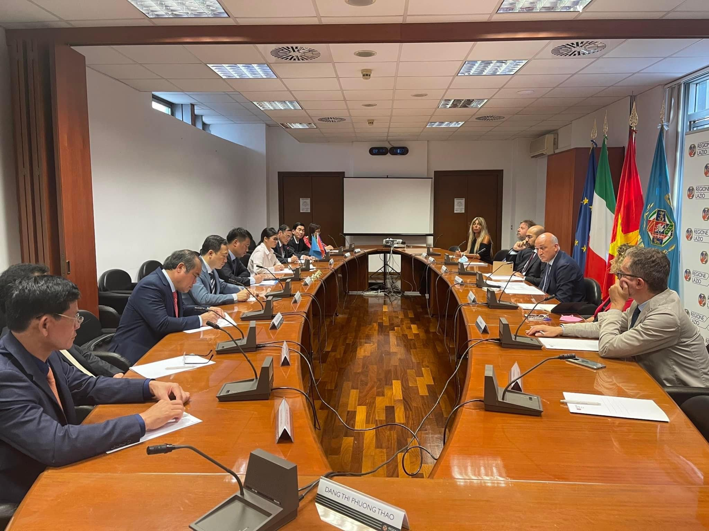
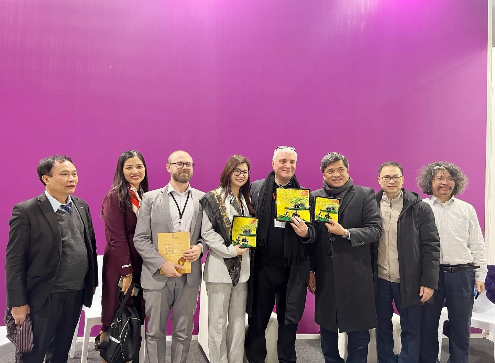
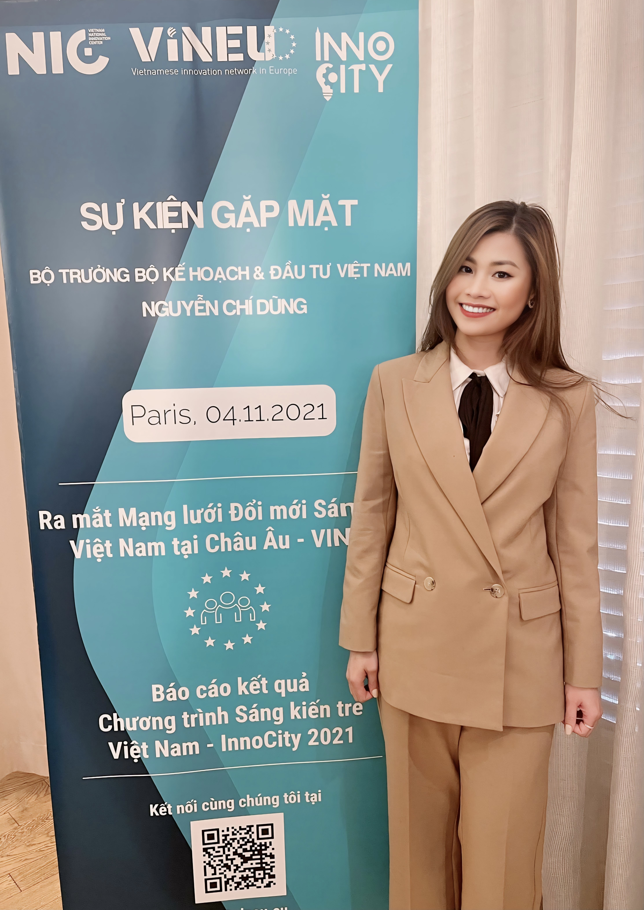
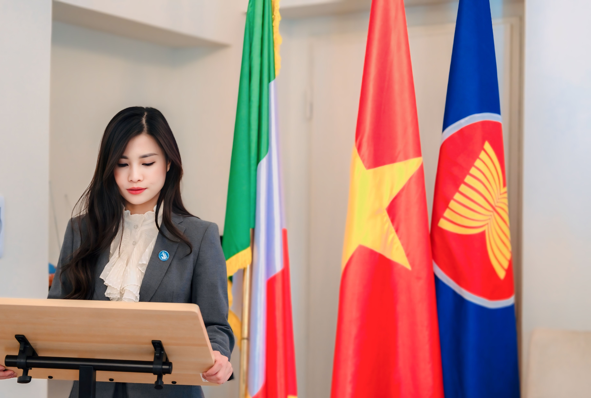
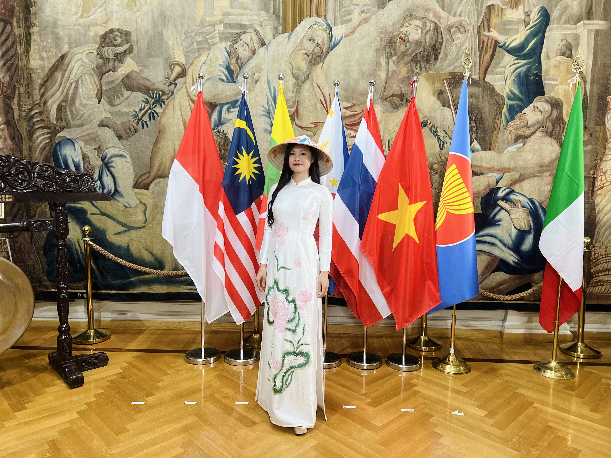

- Thư ký Hội Doanh nhân Việt Nam tại Italia ASSOEVI (2014).
- Thư ký Hội Doanh nhân trẻ Việt Nam tại châu Âu European Vietnamese Youth Business Alliance – EViYBA (2016).
- Ful 100% học bổng Thạc sĩ (09/2016).
- Giải ba cuộc thi “Lavazza anh Youth for SDGs” với dự án “Wake up the Circularity” nhằm sản xuất cà phê bền vững và tăng cường sản xuất thực phẩm an toàn tại Việt Nam (2018)
- Tốt nghiệp Thạc sĩ ngành Tài chính Ngân hàng tại Khoa Kinh tế trường Đại học Roma Tor Vergata (04/2019)
- Phó Chủ tịch Hội Sinh viên Việt Nam tại Italia (2019-2021)
- Đại diện cho nhóm kiều bào đến từ Italia (gồm CT Hội Tương trợ Ý-Việt, PCT Phòng Thương mại Ý-Việt, CT Hiệp hội Nhịp cầu Văn hoá Ý-Việt, chuyên gia y tế) phát biểu tại chuyến thăm chính thức của Thủ tướng Phạm Minh Chính gặp gỡ đại biểu kiều bào đến từ 13 quốc gia khu vực châu Âu trong khuôn viên DSQ Việt Nam taị Pháp (04/11/2021)
- Đại diện HSV VN phát biểu trong “Award ceremony & elearning course opening – Scholarship to create the future” (11/2021)
- Phiên dịch viên cho đoàn lãnh đạo Bộ Công an TP HCM sang và làm việc với cảnh sát Italia (07/2022)
- Giải “Ấn tượng” trong cuộc thi Hương sắc Việt Nam do Liên hiệp hội Thanh niên Sinh viên Việt Nam tại chấu Âu (VYSEF) tổ chức (2022).
- Người mẫu trong BST áo dài của nhà thiết kế Hoàng Hải trong lễ kỷ niệm 77 năm Quốc khánh nước CHXHCN Việt Nam (21/09/2022)
- MC, người mẫu trong sự kiện Lễ khai mạc kỷ niệm 50 năm quan hệ ngoại giao Ý-Vệt diễn ra tại khu chợ thương mại đầu tiên trên thế giới TraJan (04/2023)- Đại diện cho HSV Việt Nam phát biểu tại buổi gặp CT nước Võ Văn Thưởng với kiều bào Italia (07/2023).
- Phiên dịch viên cho phía Bộ Ngoại giao Ý trong khoá họp lần thứ VIII Uỷ ban Hỗ hợp về Hợp tác Kinh tế Việt Nam – Itaia được tổ chức tại trụ sở Bộ Ngoaị giao và hợp tác quốc tế Italia ở thủ đô Roma nhằm kỷ niêm 50 năm quan hệ ngoại giao, 10 năm qua hệ đối tác chiến lược (2023).
- Chủ tịch Hội Sinh viên Việt Nam tại Italia (11/2023)
- Đại diện Hội Sinh viên Việt Nam tại Italia (ASVI) tham dự Đại hội Đại biểu toàn quốc Hội Sinh viên Việt Nam lần thứ XI nhiệm kỳ 2023-2025 (12/2023).
- MC trong sự kiện “Xuân Quê Hương” 2024 do Đại Sứ quán tổ chức tại toà nhà vùng Lombardia Milano (ngày 02/02/2024).
- Bằng khen DSQ đã có thành tích xuất sắc trong công tác cộng đồng và truyền bá văn hoá Việt Nam tại Italia (2024).
VỀ BẢN THÂN
Năm 2014:
Bước chân sang Ý du học tôi đã chủ động tìm kiếm sự hỗ trợ từ cộng đồng người Việt tại Ý từ đó tôi bén duyên trở thành Thư ký của Hội Doanh nhân Việt Nam tại Italia (ASSOEVI). Nơi mà sự trưởng thành của tôi ngày càng lớn dần lên, tôi học hỏi, mở rộng mối quan hệ mới không chỉ với cộng đồng người Việt tại Italia mà với tất cả cộng đồng người Việt châu Âu bên cạnh những mối quan hệ ở trường lớp, bạn bè người Ý.
Năm 2016:
Với mong muốn học hỏi, cống hiến cho cộng đồng tôi trở thành Thư ký Hội Doanh nhân trẻ Việt Nam tại châu Âu European Vietnamese Youth Business Alliance – EViYBA
-
Hiện nay:
Với nhiều ước mơ, khát khao và mong muốn được cống hiến, bên cạnh công việc cá nhân tôi vẫn tham gia vào các hoạt động của cộng đồng. Hiện tại tôi đang giữ vị trí Chủ tịch Hội Sinh viên Việt Nam tại Italia (ASVI) nhiệm kỳ 2023-2025
Chúng tôi đã tổ chức thành công sự kiện Hội doanh nhân Việt Nam tại châu Âu do Ý đăng cai tổ chức tại Rome.


Tôi là người Việt Nam duy nhất khởi xướng cùng 5 bạn người Ý tham gia dự án cuộc thi “Lavazza anh Youth for SDGs” với tên dự án “Wake up the Circularity” nhằm sản xuất cà phê bền vững và tăng cường sản xuất thực phẩm an toàn tại Việt Nam do Lavazza một công ty sản xuất cà phê hàng đầu của Ý tổ chức với sự giúp đỡ của một người thầy giáo Ý rất yêu Việt Nam.




Ngoài ra tôi cũng là một người thích du lịch khám phá, tôi đã đi gần hết nước Ý và 11 nước ở trong châu Âu.